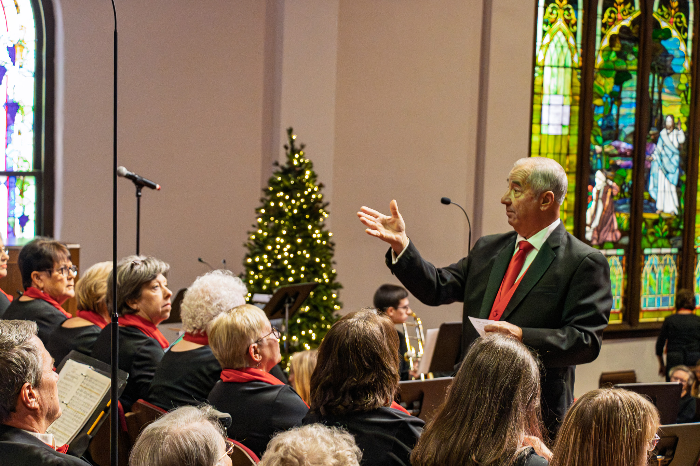
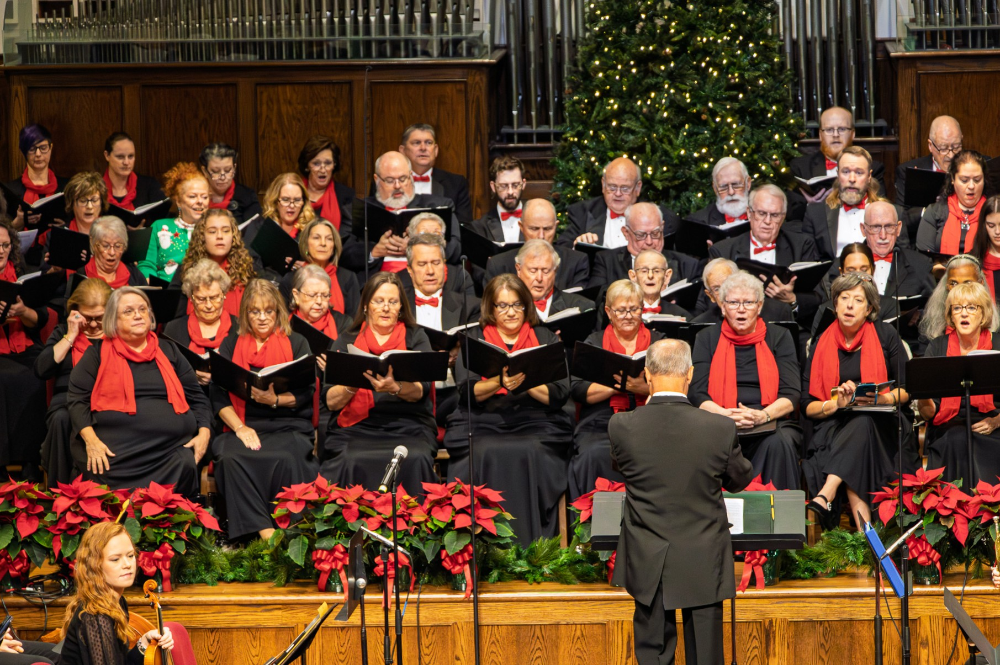
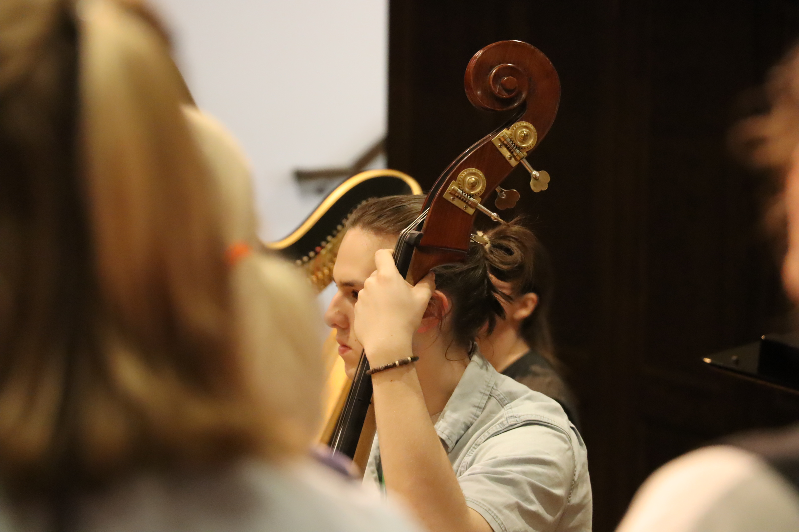

Seasonal Concerts
Holiday, spring, and special programs shaped for Cleveland County audiences.

Shelby, North Carolina
Cleveland County Choral Society brings singers and neighbors together for choral music that feels warm, local, and beautifully alive.
For more than 30 years
CCCS is a no-audition community choir for adults who love to sing. The ensemble performs seasonal concerts, welcomes new members, and creates a supportive place for beginners and experienced musicians to grow together.
Holiday, spring, and special programs shaped for Cleveland County audiences.
No audition required. Come with curiosity, commitment, and a love of music.
Donations help cover rehearsal space, sheet music, accompanists, and musicians.
Upcoming Events
Winter Concert
Sunday, December 7, 2025, 3:00-4:30 PM
Shelby venue, 120 N Lafayette St, Shelby, NC 28150
Rehearsals
Tuesday rehearsals at 6:30 PM during the spring season.
Aldersgate Methodist Church choir room, Shelby.

The Sound of Belonging
Attend a concert, add your voice, or help sustain the music. CCCS is built for people who believe a local choir can still feel polished, moving, and personal.
Support CCCS
Your gift supports rehearsal space, music, guest musicians, accompanist needs, and concerts that bring Cleveland County together.
Friend
Contributor
Patron
Sustainers Circle
Instrumentalist Fund
CCCS needs $5,000 each year to pay instrumentalists. Monthly sponsors help the choir plan responsibly and bring richer concert programs to Cleveland County.
Sing With Us
CCCS welcomes singers of many ages and experience levels. Rehearsal seasons typically run September-December and February-May, with Tuesday evening rehearsals.
Email About Joining
Stay Connected